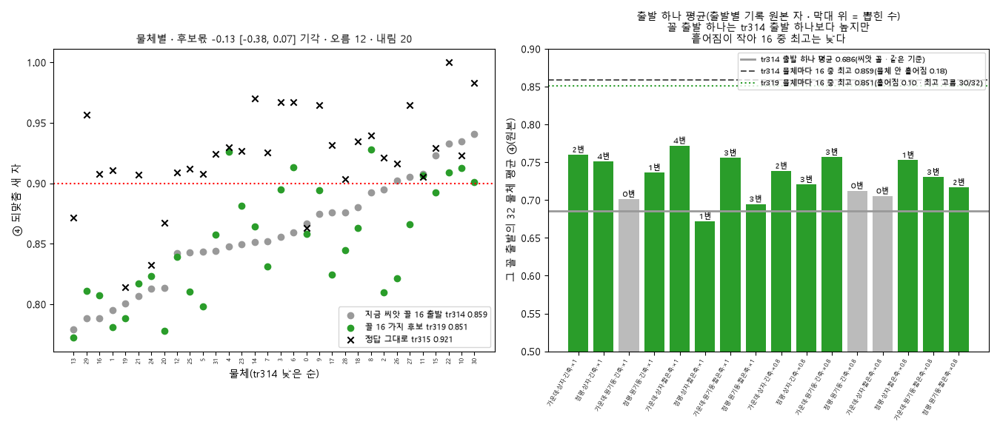

실험 m2_tr0319_h072_후보여럿
목표 G1.2 view 모음 → 파츠별 CAD code(CadQuery · 그 전 「3 면도 → 파츠별 CAD」 · 지금 M2 는 위 · 앞 · 옆 고정 세 장만 받음 → 아무 각도 N 장으로 바꿀 것 · 11-20) · G1 첫 제품 — 피규어 · 메카 사진 여러 장 + 치수 → 숨은선 3 면도 + 파츠별 CAD · G0 임의의 이미지 → CAD 코드 · 빌린 가정 5: 정사영 · 시점앎 · 흰바탕 · 렌더화풍 · 정답3D · 갚는 계획: 진단 · 정답 만들기 — 껍데기를 그릴 어휘가 정해지면 그 어휘로 CAD code 정답 변환(m2 학습 · 비교는 그 뒤 카드) · 목표 시험지 값: 안 잼 (!)
씨앗 출발이 낮은 것은 뺌 씨앗 꼴이 하나뿐인 탓인가 — 출발마다 뺌 꼴(자리 · 종류 · 축 · 크기)을 달리하고 입력으로 고르면 tr314 보다 오르나?
| 가설 | 주장 | 결과 | 근거 |
|---|---|---|---|
| m2-H72 | 씨앗 출발의 낮음은 뺌 씨앗 꼴 하나에 갇힌 탓이다 — 출발마다 꼴을 달리해 입력으로 고르면 tr315 오름의 30 % 이상을 되찾고 넷차 구간 아래가 0 보다 크다 | 기각 | S6 합성 정답 32 · 뺌 씨앗 꼴 16 을 출발마다 달리한 ④ 되맞춤 새 자 평균 0.8508(tr314 0.8588 · tr315 0.9214) · 후보몫 −0.1271(≤ 0.1 → 기각) · 후보몫 구간 [−0.3754, 0.0663] · 넷차 −0.008 구간 [−0.0206, 0.0045] · 오름 12 · 내림 20 · 물체별 차 중앙값 −0.0105 · 0.9 넘은 물체 7/32(tr314 7 · 새로 넘음 4 · 6 · 8 · 떨어짐 15 · 26 · 27) · 가장 큰 오름 4 +0.0785 · 6 +0.0542 · 3 +0.0396 · 가장 큰 내림 2 −0.0851 · 26 −0.0807 · 17 −0.0513 · 최소 0.7724(물체 13) · tr315 보다 높은 물체 1 · 뺌 찾음 34/93(tr314 28 · tr315 74) · 남은 뺌 몸 평균 2.25 · 하네스 실패 0 · CAD 안 끝남 0 · 조용한 실패 0 · 판 폴더 0.02 GB · 끝 단계 19.4 분(11:24:39 → 11:44:02 · 처음 3 분 tr320 GPU 단계와 겹침 · tr314 23 분) · 판정 밖(b319분석 · b319분석2 · 기록 json 출발별 새 자(원본)): 뽑힌 꼴 0:2 1:4 3:1 4:4 5:1 6:3 7:3 8:2 9:3 10:3 13:1 14:3 15:2(2 · 11 · 12 는 0 번) · 비트별 켠 쪽 이김 자리 점평균 15 · 원기둥 15 · 짧은 축 17 · ×0.8 14(/32) · (아래는 출발별 기록의 원본 자 · 끝 넷 값과 물체당 최대 0.016 차) 꼴 출발 하나의 32 물체 평균 0.672 ~ 0.772 · 전체 0.7299 대 tr314 출발 하나 0.6858(출발별 0.572 ~ 0.758 · 같은 씨 짝 +0.0441 · 16 열 중 12 열 tr319 높음) · 물체 안 16 출발 표준편차 평균 tr314 0.183 · tr319 0.099 · 물체마다 16 중 최고 평균 tr314 0.8591 · tr319 0.8509 · 고르기 자가 최고 출발을 고른 물체 30/32(놓친 18 · 26 차 ≤ 0.003 · tr314 도 30/32) · 원본 자로 내려간 17 물체(넷 자 20) 중 tr319 16 출발 최고 ≥ tr314 고른 것 0 · 처음 「꼴이 모두 씨앗 꼴보다 낮다」 는 출발 하나를 고른 값과 견준 제 실수(맥락 없는 검토) · 출발 자리 찾음 상자 가운데 9/93 · 가운데 ∪ 점 평균 13/93(감시가 적은 25/93 은 k-평균 씨 0 ~ 15 를 바꾼 가상 셈 · tr314 출발은 씨 0 고정 9/93) · 정답 뺌에 상자 + 원기둥 섞인 물체 8(0 · 3 · 8 · 10 · 17 · 18 · 22 · 26) 차 −0.0161 · 나머지 −0.0052 |
결정 표(돌리기 전에 정함)
- 만약 지지
다음 출발 꼴 다양화를 바탕 후보로 — 다음은 확인 실험(새 시험지) 카드 - 만약 기각
다음 출발 꼴 고르기로는 안 됨 — A 진단 결과와 같이 보고 다음을 사용자와 고름 - 만약 약함
다음 섞임 — 숫자 그대로 적고 사용자와 고름
분석
한 줄로
물음: 씨앗에서 출발한 맞춤(tr314)이 정답에서 출발한 맞춤(tr315)보다 낮은 것은, 뺌 씨앗이 한 가지 꼴로만 놓이기 때문인가? 출발마다 뺌 꼴을 달리하고 입력만 보고 고르면 tr314 보다 오르나?
답: 오르지 않았다. 판정은 기각이다. 출발 16 개에 뺌 꼴 16 가지를 하나씩 줬더니 평균이 0.8508 로 tr314(0.8588)보다 조금 낮았다. tr315 오름 가운데 되찾은 몫(후보몫)은 −0.13 이다. 미리 적은 규칙(≤ 0.1 이면 기각)에 걸리고, 결과 전에 적은 예측(기각)과도 같다. 판정 밖으로 원인도 셌다. 고르기는 16 출발 중 사실상 가장 좋은 것을 골랐다(30/32). 출발 하나만 보면 꼴을 정한 출발이 tr314 출발보다 오히려 높았다(평균 0.730 대 0.686). 그러나 한 물체 안에서 출발끼리 덜 흩어져서, 16 중 최고는 tr314 보다 낮았다(0.851 대 0.859).
왜 이 실험을 했나
우리 목표는 메시를 부품 CAD 코드로 바꾸는 것이다. 이 판들은 그 정답을 만드는 변환이 얼마나 충실한지 본다. tr316 ~ 318 에서 뺌 몸의 자리 · 종류 · 크기를 하나씩 정답으로 줬지만 셋 다 혼자서는 오르지 않았다. 그래서 사용자가 「A, B 둘 다」 를 골랐다. A 는 남은 성분(몸 수 · 축)을 나눠 보는 진단 넷(tr320 ~ 323)이다. B 는 정답을 보지 않고 성능을 올려 보는 이 판이다. 「오목한 곳마다 빼는 몸 후보를 여럿, 자리 · 종류 · 크기 조합을 다르게, 맞춤이 고르게」 하자는 뜻이다.
낱말 몇 개를 먼저 풀어 둔다.
- ④ 는 본 판 전에 거치는 관문이다. 뺌 어휘로 직접 만든 합성 정답 32 개(물체 0 ~ 31)를 같은 맞춤으로 다시 맞춰(되맞춤) 정답을 되찾는지 본다.
- 뺌 몸 은 더한 몸에서 파내는 몸이다. 씨앗 은 입력에서 파인 곳을 찾아 뺌 몸을 처음 놓는 자리와 꼴이다. 파인 점을 k-평균으로 네 덩이로 나눠 만든다.
- 맞춤은 물체마다 출발점 16 개(16 출발)에서 따로 돈다. 끝에서 고르기 자(입력 메시와 맞춘 표면이 얼마나 겹치나 · 정답은 안 씀)가 가장 높은 출발 하나를 고른다.
- 종 logit 은 몸마다 어휘의 몸 종류(상자 · 원기둥 · 계단축 등) 칸에 매긴 점수다. 지금 씨앗은 모두 0 으로 둔다. 그래서 모든 종이 같은 무게로 섞인 채 출발하고, 맞춤이 종을 정한다.
- 고르기 자 는 입력 메시와 맞춘 표면의 F 점수다(정답 안 씀 · 배관2 의 끝 단계). 배관2 는 이 맞춤 · 고르기 · 채점을 묶은 코드다.
바꾼 것 하나
출발마다 뺌 씨앗의 꼴을 다르게 했다. 출발 번호의 네 비트로 16 가지를 만들었다.
- 자리: 덩이 상자 가운데, 또는 덩이 점 평균
- 종: 상자, 또는 원기둥(종 logit ±4 로 정함)
- 축: 긴 변 규칙, 또는 짧은 변(판에 뚫린 구멍 꼴)
- 크기: 덩이 상자 × 1, 또는 × 0.8
한 출발 안의 씨앗 넷은 같은 꼴이다. 정답은 읽지 않는다. 덩이 · 몸 수 · 고르기 자, 그리고 나머지 맞춤 설정은 tr314 와 같다.
결과

왼쪽 그림의 가로축은 tr314 점수가 낮은 물체부터 늘어놓은 순서다. 초록(이 판)이 회색(tr314) 아래로 처진 물체가 더 많다(오름 12 · 내림 20). 오른쪽 막대는 그 꼴로 출발한 맞춤의 32 물체 평균이다(출발별 기록의 원본 자 · 판정 밖). 막대 위 숫자는 그 꼴이 몇 번 뽑혔는지다. 회색 실선은 같은 기준으로 잰 tr314 출발 하나의 평균(0.686)이다. 막대 16 개 중 15 개가 그 선 위에 있다. 위쪽 두 점선은 물체마다 16 출발 중 최고를 골라 낸 평균이다. 여기서는 tr314(0.859)가 이 판(0.851)보다 높다.
| 후보여럿(이 실험) | 씨앗 출발(tr314) | 정답 그대로(tr315) | |
|---|---|---|---|
| 되맞춤 새 자 평균 | 0.8508 | 0.8588 | 0.9214 |
| 되찾은 몫 | −0.13 [−0.38, 0.07] | 0 | 1 |
| 0.9 넘은 물체 | 7/32 | 7/32 | 27/32 |
| 뺌 자리 찾음 | 34/93 | 28/93 | 74/93 |
| 끝에 남은 뺌 몸(물체 평균) | 2.25 | 2.41 | 2.5 |
| 하네스 실패 · CAD 안 끝남 | 0 · 0 | 0 · 0 | 0 · 0 |
새 자는 정답 메시와 맞춘 메시의 표면 점이 서로 0.02 안에 드는 정도를 F 점수(0 ~ 1)로 잰 값이다. 거리 단위는 정답을 둘러싼 상자의 가장 긴 변을 1 로 둔 것이다. 되찾은 몫은 (이 판 − tr314) ÷ (tr315 − tr314) 다. 대괄호는 물체를 짝지어 다시 뽑은(부트스트랩 2,000 번) 95 % 구간이다.
왜 이렇게 나왔나
확인한 것
- 짝 차(같은 물체끼리 뺀 차의 평균)는 −0.008, 구간은 [−0.021, 0.005] 다. 물체별 차 중앙값은 −0.011 이다. 0.9 를 새로 넘은 물체는 4 · 6 · 8, 떨어진 물체는 15 · 26 · 27 이다.
- 뽑힌 꼴은 고르게 퍼졌다. 꼴 번호별 횟수는 0:2, 1:4, 3:1, 4:4, 5:1, 6:3, 7:3, 8:2, 9:3, 10:3, 13:1, 14:3, 15:2 이고, 2 · 11 · 12 는 한 번도 안 뽑혔다. 비트별로 켠 쪽이 이긴 횟수는 자리 15, 원기둥 15, 짧은 축 17, × 0.8 14 다(각 32 중). 어느 한 꼴이 뚜렷이 이기지 않았다.
- 아래 셋은 출발별 기록에 남은 원본 자 로 셌다. 원본 자는 출발마다 잰 같은 F 점수이고, 표의 끝 값과는 물체당 최대 0.016 다르다(평균은 같음).
- 고르기 자는 사실상 최고를 골랐다. 16 출발 중 원본 자가 가장 높은 출발을 고른 물체가 30/32 다. 놓친 둘(물체 18 · 26)은 차이가 0.003 이하다. 고른 것의 평균은 0.8508, 최고의 평균은 0.8509 다. tr314 도 30/32 이고 0.8590 대 0.8591 이다.
- 출발 하나만 보면 이 판이 높다. 출발 하나의 평균은 tr314 0.686(출발별 0.572 ~ 0.758), 이 판 0.730(꼴별 0.672 ~ 0.772)이다. 같은 씨끼리 짝지으면 이 판이 +0.044 높고, 16 열 중 12 열에서 높다.
- 대신 출발끼리 덜 흩어졌다. 한 물체 안 16 출발의 표준편차 평균은 tr314 0.183, 이 판 0.099 다. 그래서 물체마다 16 중 최고는 tr314 0.8591, 이 판 0.8509 다. 원본 자로 내려간 17 물체(넷 자로는 20) 가운데, 16 중 최고가 tr314 가 고른 값에 닿은 물체는 없다.
- tr314 의 16 출발은 모두 같은 씨앗 꼴이다(k-평균 씨 0 고정 · 다른 몸의 무작위 출발만 다름). 이 판의 16 출발에는 그 꼴이 없었다.
- 출발 자리가 정답 뺌 가운데에서 0.1 안에 든 수는 tr314 가 9/93 이다(상자 가운데). 이 판은 가운데와 점 평균을 합쳐 13/93 이다. 끝 찾음도 28 → 34/93 로 늘었지만 점수는 오르지 않았다.
- 정답 뺌에 상자와 원기둥이 섞인 물체 8 개(0 · 3 · 8 · 10 · 17 · 18 · 22 · 26)의 차는 −0.016 이고, 나머지 물체는 −0.005 다.
짐작 (아직 확인 안 함)
- 처음에는 「종을 ±4 로 박아 꼴 하나하나가 낮다」 고 읽었다. 출발 하나를 16 중 고른 값과 견준 잘못이었다(맥락 없는 검토가 짚음). 같은 기준으로는 꼴 출발이 더 높다.
- tr314 의 16 중 최고가 높은 것은 출발끼리 넓게 흩어진 덕으로 보인다. 그 흩어짐이 어디서 오는지는 재지 않았다. 다른 몸의 무작위 출발일 수도 있고, 종이 정해지지 않은 채(logit 0) 출발하는 것일 수도 있다.
- 섞인 물체가 조금 더 내려갔다. 한 출발 안의 씨앗 넷이 같은 꼴이라 구멍과 포켓을 한 출발로 낼 수 없는 탓일 수 있다. 8 개뿐이라 구간은 재지 않았다.
한계
- 한 번만 돌렸다. tr314 를 지금 코드로 다시 돌리지 않아, 같은 판을 다시 돌릴 때의 흔들림 크기는 재지 않았다.
- 크기 × 0.8 은 근거 없이 고른 한 값이다(결과 전에 정함).
- 출발 집합에 지금 씨앗 꼴(종 logit 0)이 없어서 tr314 와 출발 집합 자체가 다르다(결과 전 검토에서 짚음).
- 출발마다 뺌 꼴과 다른 몸의 무작위 출발이 같이 바뀐다. 꼴 효과만 따로 떼지 못한다.
- 꼴별 평균 · 고르기 검사 · 흩어짐 · 출발 자리 찾음은 판정 밖이다. 감시 세션이 결과 뒤에 요청해 출발별 기록으로 셌고, 판정과 다른 원본 자를 썼다.
- 섞인 물체 8 개의 차(−0.016)는 구간을 재지 않았다.
- 감시가 견줄 값으로 적은 「tr314 출발별 합집합 25/93」 은 k-평균 씨를 0 ~ 15 로 바꿨다고 가정한 셈이다. tr314 가 실제로 쓴 출발은 9/93 이다.
- 끝 단계는 19.4 분 걸렸다(tr314 23 분). 처음 3 분은 tr320 GPU 단계와 겹쳤고 CAD 안 끝남은 0 이다.
배운 것과 다음
뺌 꼴을 출발마다 달리하고 입력으로 골라도 오르지 않는다(몫 −0.13). 꼴을 정한 출발 하나는 더 좋았지만, 출발끼리 덜 흩어져 16 중 최고가 낮았다.
- 고르기 자는 믿을 만하다(최고 출발 30/32). 16 출발에서는 출발 하나의 평균보다 출발끼리의 흩어짐이 16 중 최고를 정한다.
- 꼴 후보와 지금 씨앗 꼴을 함께 넣거나 출발 수를 늘리는 판이 후보다. tr314 흩어짐이 어디서 오는지도 따로 잴 수 있다. 이것은 내 제안이고, 다음 판은 A 네 판 결과를 다 본 뒤 감시 세션과 고른다.
- 바탕은 지금 맞춤 코드(tr314 씨앗 꼴) 그대로 둔다.
검토 (11-27 맥락 없는 서브 에이전트 · 보고 · 카드 · 잼 · 넷 세 개 · 결과_pc.png · 판정319 · 316 · b319분석 · b319분석2 · 그림319 · 껍데기313 만 봄)
- 판정 숫자 · 판정 밖 숫자는 다시 센 값과 모두 같음(평균 · 몫 · 구간 · 오름 내림 · 중앙값 · 0.9 넘음 번호 · 찾음 · 꼴 분포 · 30/32 · 9 · 13/93 · 섞인 8 개 차). 스크립트 셈 버그 없음.
- 가장 큼: 「꼴 16 가지가 하나하나 씨앗 꼴보다 낮다」 는 출발 하나 평균(막대)을 16 중 고른 값(0.859)과 견준 것. 같은 기준 tr314 출발 하나 평균 0.686 · 같은 씨 짝 +0.044 · 12/16 열에서 tr319 높음 · 물체 안 흩어짐 0.183 대 0.099.
- 짐작 1(종 ±4 가 해롭다)은 위 때문에 전제가 무너짐 → 흩어짐 쪽으로.
- 확인 칸의 「후보의 천장이 낮았다」 는 해석.
- 자가 둘(기록의 원본 자 · 넷 자 · 물체당 최대 0.016 차)인데 풀이 없음 · 내림 17 대 20.
- 풀이 없는 낱말: 종 logit 이 두 종이 아니라 어휘 칸 · 고르기 자 · 원본 자 · 배관2.
- 그림 오른쪽 세로축 0.6 시작 · 같은 기준 선 없음. 한계에 자 둘 · 흩어짐 · 섞인 8 개 구간 없음이 빠짐.
고친 줄 (검토 반영)
- 제 실수: 출발 하나와 16 중 고른 값을 견줘 「꼴이 모두 씨앗 꼴보다 낮다」 고 썼다. 같은 기준으로 내가 다시 셈(tr314 출발 하나 0.6858 · tr319 0.7299 · 짝 +0.0441 · 12 열 · 흩어짐 0.183 · 0.099 · 최고 0.8591 · 0.8509) → 한 줄로 · 결과 그림 설명 · 확인한 것 · 짐작 · 배운 것 굵은 문장과 다음을 고침. 감시 세션에 바로잡음을 보냄.
- 그림 오른쪽: tr314 출발 하나 평균 선 · 16 중 최고 선 둘(흩어짐 함께) · 세로축 0.5 부터 · 제목 바꿈.
- 확인 칸은 숫자만 · 「천장」 해석은 뺌 · 원본 자 풀이 · 내림 17(넷 20) · 놓친 둘 차 0.003 이하.
- 낱말 풀이: 종 logit(어휘 칸) · 고르기 자 · 배관2.
- 한계: 판정 밖은 원본 자 · 섞인 8 개 구간 안 잼.